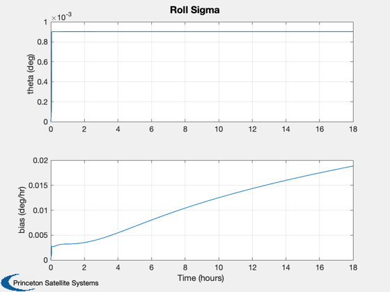
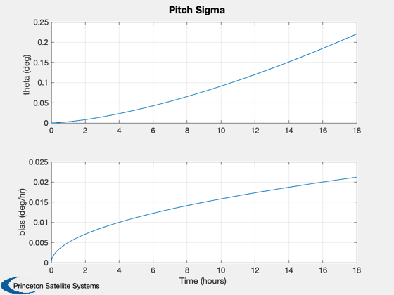
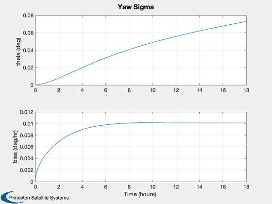

Performs a covariance analysis of different gyros.
------------------------------------------------------------------------ See also C2DZOH, Plot2D, RW2SDev ------------------------------------------------------------------------
Contents
------------------------------------------------------------------------- Copyright 1999 Princeton Satellite Systems, Inc. All rights reserved. -------------------------------------------------------------------------
radToDeg = 180/pi; degToRad = pi/180; perHrToPerSec = 1/3600; gyroType = 'HRG'; switch gyroType case 'HRG' sigmaBias = RW2SDev(0.005*perHrToPerSec); sigmaNoise = RW2SDev(0.0003); case 'IFOG' sigmaBias = RW2SDev(0.015*perHrToPerSec); % 8.0964e-9; % sigmaNoise = RW2SDev(0.005); otherwise error([gyroType, ' not supported.']); end q11 = sigmaNoise^2*ones(1,3); q22 = sigmaBias^2*ones(1,3); dT = 10; qK = diag([q11 q22])*dT;
Measurement noise
%------------------ r = (0.001*degToRad)^2; %*eye(2); rK = r/dT; h = [1 0 0 0 0 0]; nSim = 18*3600/dT; p = zeros(6); % start with perfect knowledge t = zeros(1,nSim); pDg = zeros(6,nSim); w0 = -7.291e-5; b = [eye(3);zeros(3,3)]; a = [ 0 0 w0 -1 0 0;... 0 0 0 0 -1 0;... -w0 0 0 0 0 -1;... zeros(3,6)]; [phi,gam] = C2DZOH(a,b,dT); for k = 2:nSim t(k) = t(k-1) + dT; % Compute the Kalman Gain & update the covariance kG = p*h'*inv(h*p*h' + rK); iKH = (eye(size(p)) - kG*h); p = iKH*p*iKH' + kG*r*kG'; p = 0.5*(p + p'); % Make p symmetric % Propagate the covariance matrix p = phi*p*phi' + qK; p = 0.5*(p + p'); % Make p symmetric pDg(:,k) = diag(p); end Plot2D(t/3600,[sqrt(pDg(1,:))*radToDeg;sqrt(pDg(4,:))*3600*radToDeg],'Time (hours) ',strvcat('theta (deg)','bias (deg/hr)'),'Roll Sigma') Plot2D(t/3600,[sqrt(pDg(2,:))*radToDeg;sqrt(pDg(5,:))*3600*radToDeg],'Time (hours) ',strvcat('theta (deg)','bias (deg/hr)'),'Pitch Sigma') Plot2D(t/3600,[sqrt(pDg(3,:))*radToDeg;sqrt(pDg(6,:))*3600*radToDeg],'Time (hours) ',strvcat('theta (deg)','bias (deg/hr)'),'Yaw Sigma')  
the final attitude stand. dev.
pSig = sqrt(diag(p(1:3,1:3)))*radToDeg %-------------------------------------- % PSS internal file version information %--------------------------------------
pSig =
0.0009029
0.22038
0.072823